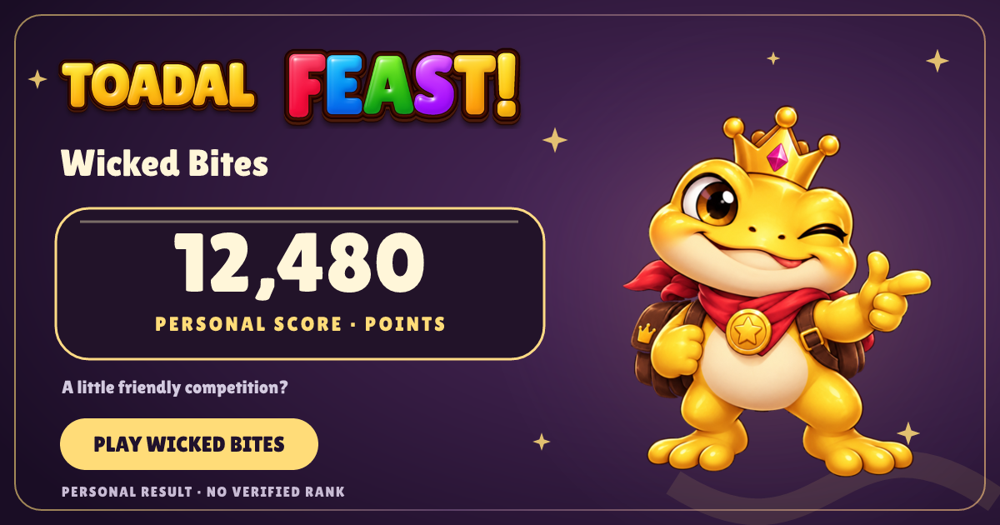
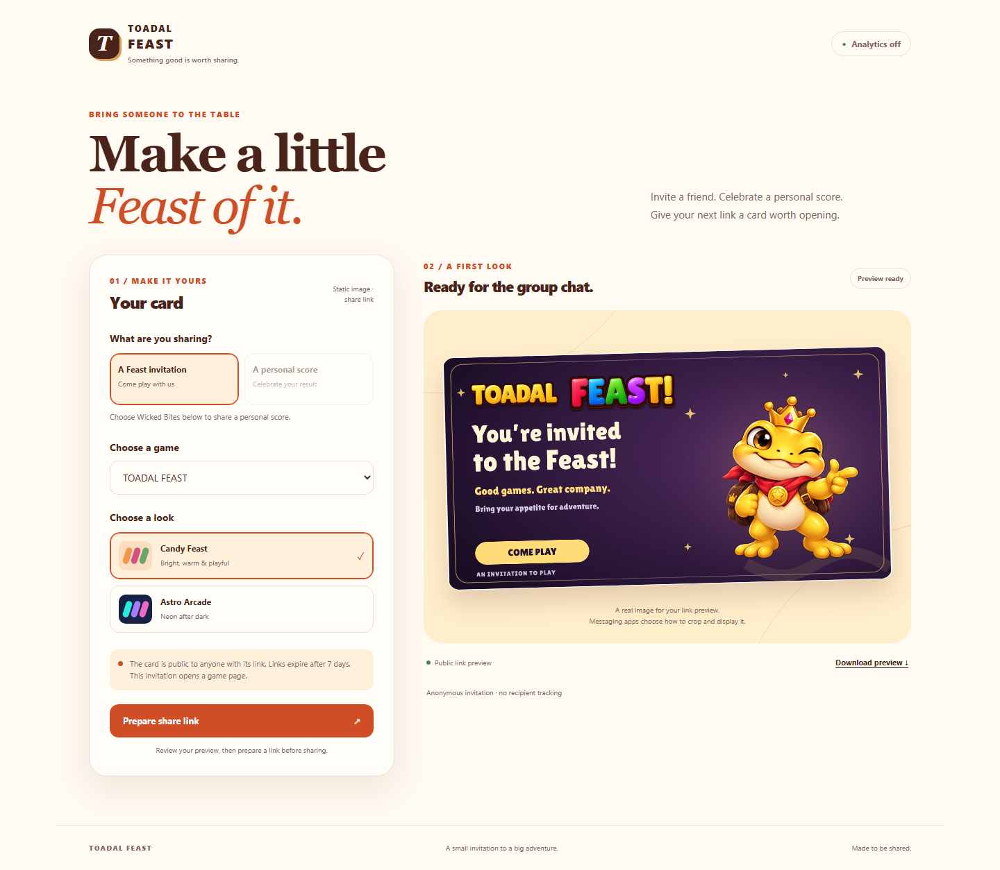

LOCAL IMPLEMENTATION · GITHUB DRAFT REVIEW
An invitation worth opening.
Feast and Astro sharing cards using the newer TOADAL lettering and Astro HUD artwork, with a working composer and persistent link service.
Review candidate. Links from the local composer work on this computer. Public hosting, website integration and actual Facebook/Messages preview qualification are the next launch steps. Analytics and public names are off.
Feast invitation
Static 1200×630 imageAstro personal score
Player-submitted result, without verified rankingAstro invitation
Feast personal score

Validation
54 service and storage tests and 52 existing website boundary tests passed. Desktop/mobile Chromium passed 12 check groups. The actual local Worker with simulated R2 passed creation, metadata, PNG, retry and revocation checks. Worker type/build checks, asset hashes and the dependency audit passed.
Native/clipboard checks used explicit browser stubs; real OS sharing and social platforms remain untested. Native HUD Maker design seeds passed schema validation; their visual Designer round trip is still a launch/design handoff check. See the included validation receipt and plan for details.
Composer

Open the source package at services/share-cards, run npm ci --ignore-scripts and npm run dev, then visit the local composer. The package also includes native HUD Maker design seeds and font/asset notices.